Application web CHSCT – Gestion des déclarations d'accidents du travail
26 mai – 26 juin 2026 · Saint-Étienne-du-Rouvray
Veoneer est une entreprise internationale spécialisée dans les technologies de sécurité automobile. Son objectif principal est de protéger les passagers des véhicules en cas d'accident grâce à des systèmes électroniques avancés. Elle évolue dans le secteur industriel automobile, plus précisément dans la conception et la fabrication d'équipements de sécurité destinés aux constructeurs automobiles.
Veoneer a été créée en 2018 à la suite d'une séparation du groupe Autoliv, leader mondial dans le domaine de la sécurité automobile. Cette scission avait pour objectif de permettre à la nouvelle entité de se concentrer sur les technologies électroniques et innovantes.
Depuis sa création, l'entreprise a connu plusieurs évolutions importantes :
L'activité principale de Veoneer consiste à concevoir, fabriquer et commercialiser des systèmes de sécurité automobile :
Veoneer est dirigée par un directeur général (CEO), entouré de plusieurs directions principales :
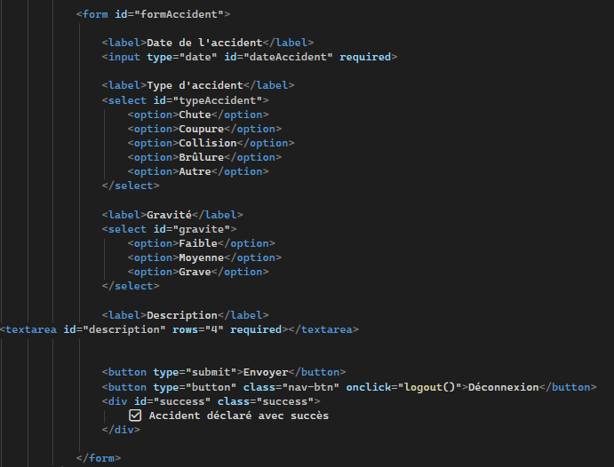
Veoneer est présente à l'international, notamment en Europe, en Amérique du Nord et en Asie. Son site de Saint-Étienne-du-Rouvray emploie plusieurs centaines de salariés.
Les principaux clients sont les constructeurs automobiles (Renault, Peugeot, Volkswagen). Veoneer est un fournisseur de rang 1, travaillant directement avec ces constructeurs.
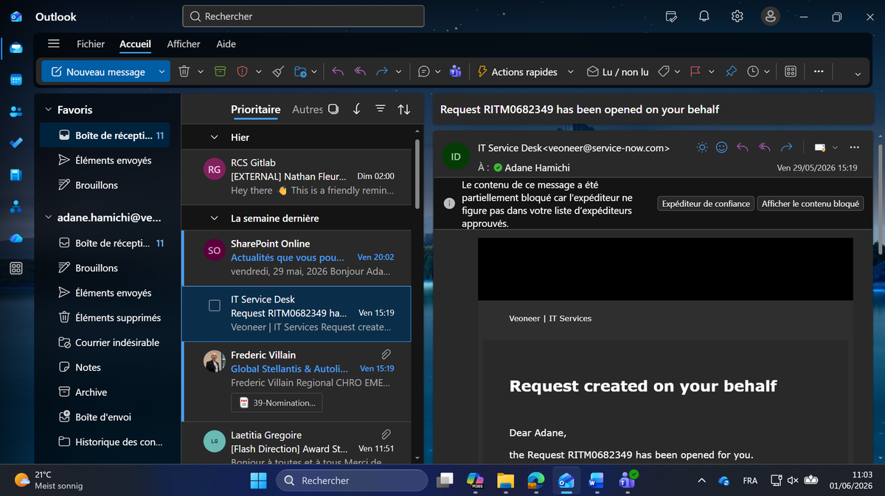
Le service IT est chargé de gérer, développer et maintenir les systèmes informatiques utilisés par l'ensemble des services. Durant mon stage, j'ai été intégré au sein du service IT, plus précisément dans une équipe de développeurs.
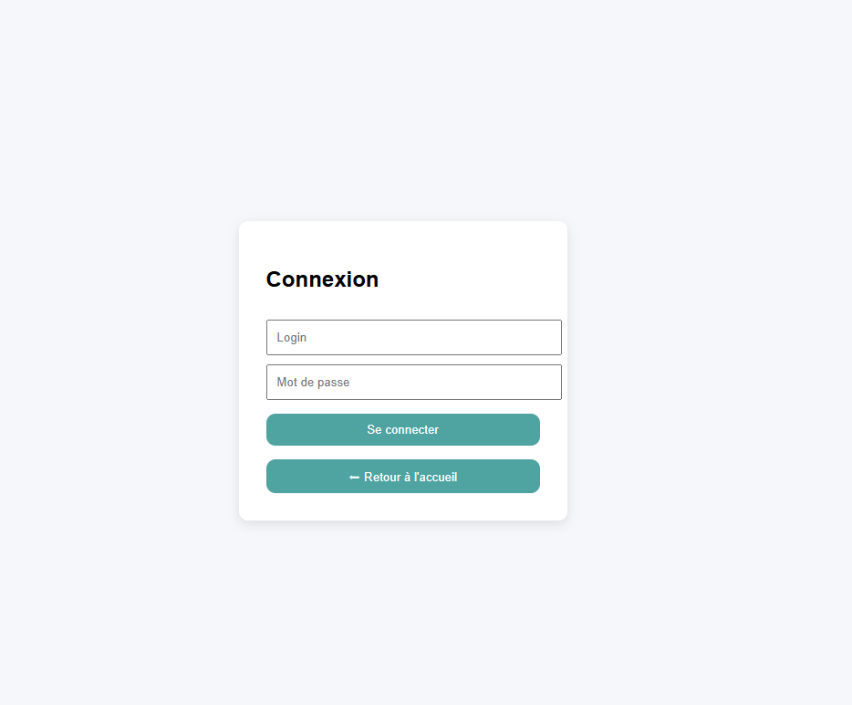
Ordinateur HP avec processeur Intel Core i5, ainsi que deux écrans pour le développement et le multitâche.
L'entreprise dispose d'une infrastructure informatique performante, avec des serveurs utilisés pour des systèmes de traçabilité industrielle, essentiels dans le domaine automobile.
L'organisation repose principalement sur Microsoft Teams. Les tâches m'ont été attribuées directement via Teams. Une fois une tâche réalisée, je dépose le fichier pour validation.
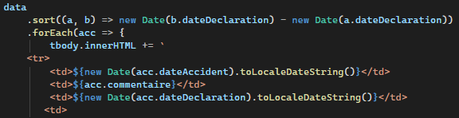
Des réunions sont organisées une à deux fois par jour sur Teams pour :
Les accès aux outils m'ont été transmis via Outlook. Je dispose d'une adresse professionnelle dédiée : adane.hamichi@veoneer.com.
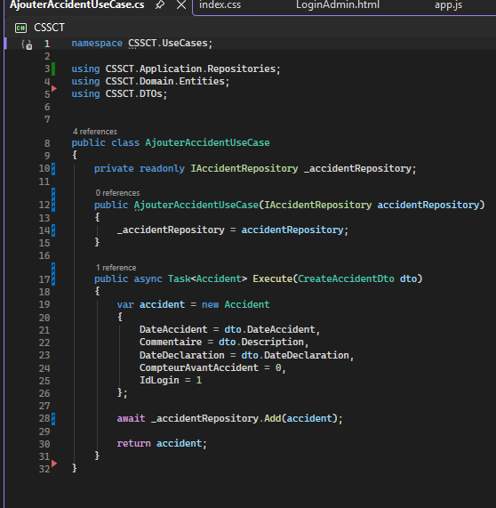
Le projet consiste à développer une application web permettant de déclarer et de gérer les accidents en entreprise dans un cadre CHSCT.
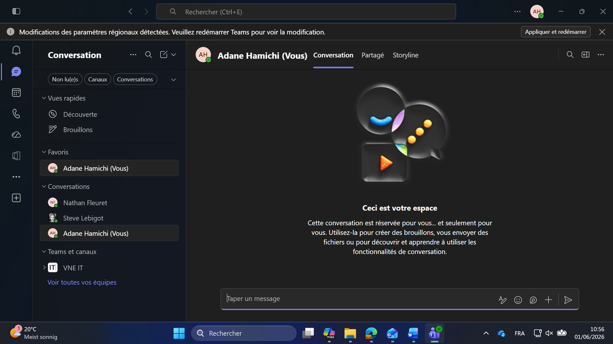
Remplacer une gestion des accidents peu structurée par une solution plus précise et exploitable.
Trop d'informations non structurées. Difficulté d'analyse des accidents. Manque de clarté dans les déclarations.
Structurer les données (type, gravité, description). Faciliter la lecture. Permettre modification et suppression.
Au départ, l'application ne contenait qu'un formulaire simple avec un champ « commentaire ».
HTML — structure
CSS — mise en forme
JavaScript — interactions + appels API
ASP.NET Core Web API
C#
Entity Framework — accès BDD
SQL Server
Table « Accidents » avec ID auto-incrémenté
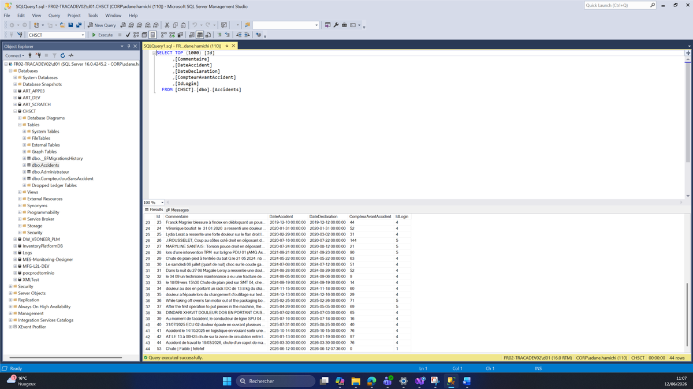
Les fichiers sources ayant été perdus, j'ai dû recréer l'ensemble du projet depuis zéro : initialisation de la solution ASP.NET Core, configuration des packages NuGet, mise en place de la structure MVC/API.
Remplacement du champ « commentaire » unique par plusieurs champs structurés :
Les données sont envoyées via POST (JSON), stockées côté backend, regroupées dans SQL Server.
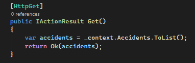
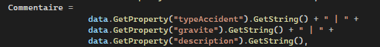
Création du modèle Code-First avec Entity Framework Core et migration vers SQL Server. La table « Accidents » utilise un ID auto-incrémenté.
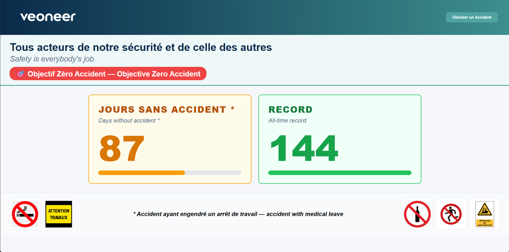
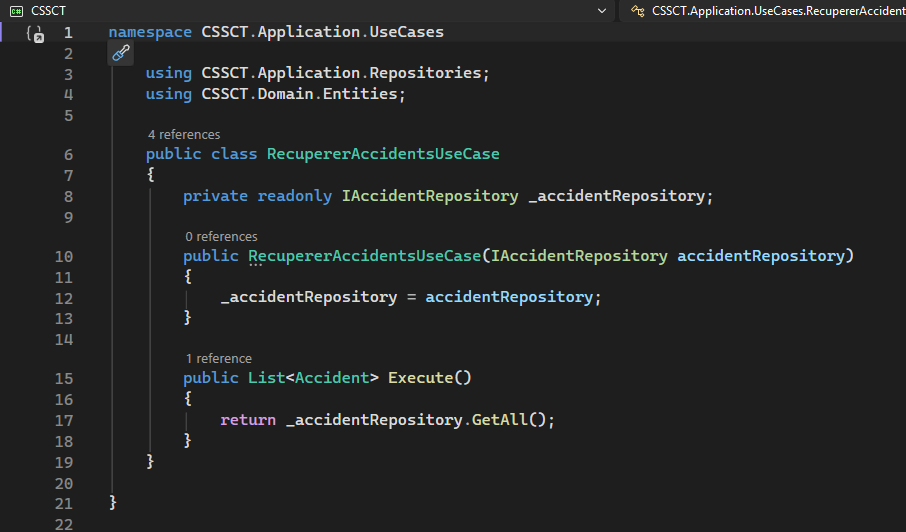
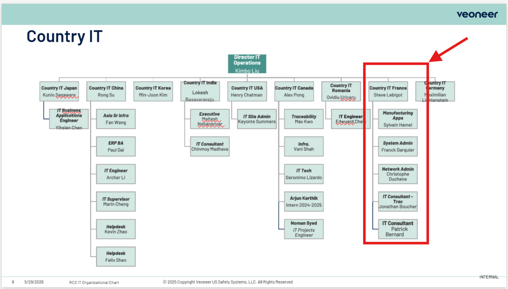
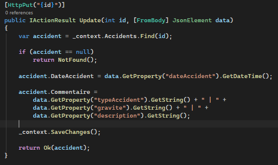
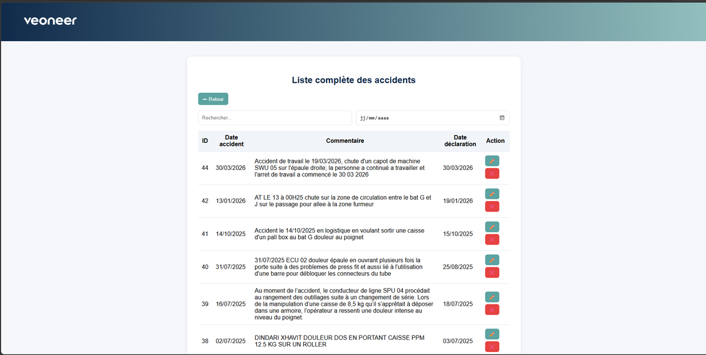
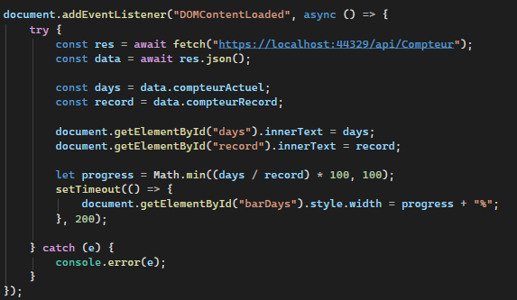
Page index destinée aux téléphones disposés dans l'usine — page de sensibilisation à la sécurité. J'ai dû reprendre plusieurs fois le design pour assurer la cohérence des couleurs.
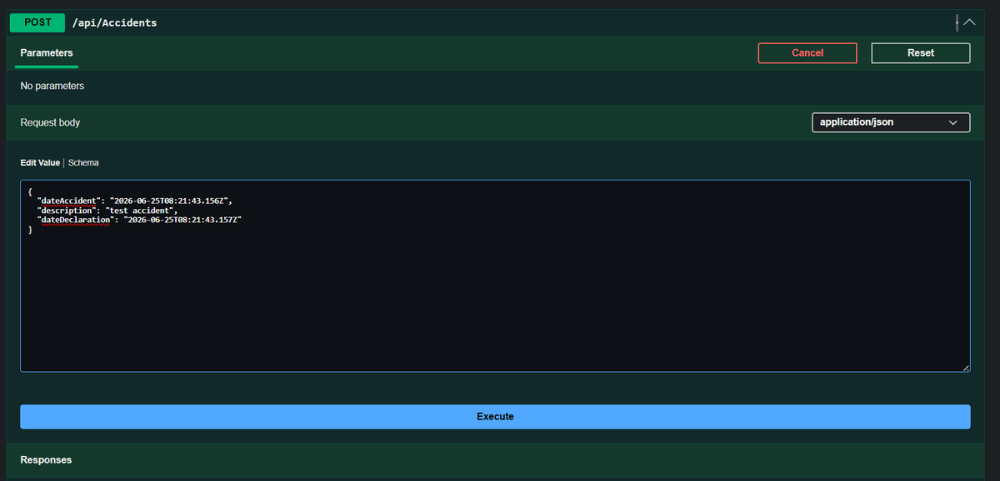
Page de connexion temporaire avec user et password choisis par mes soins. Même direction artistique que les autres pages.
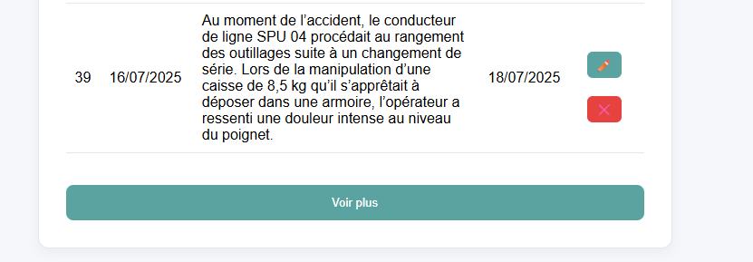
La page de déclaration d'accidents et la liste complète des accidents de travail avec recherche par mot-clé/date et possibilité de modifier ou supprimer.
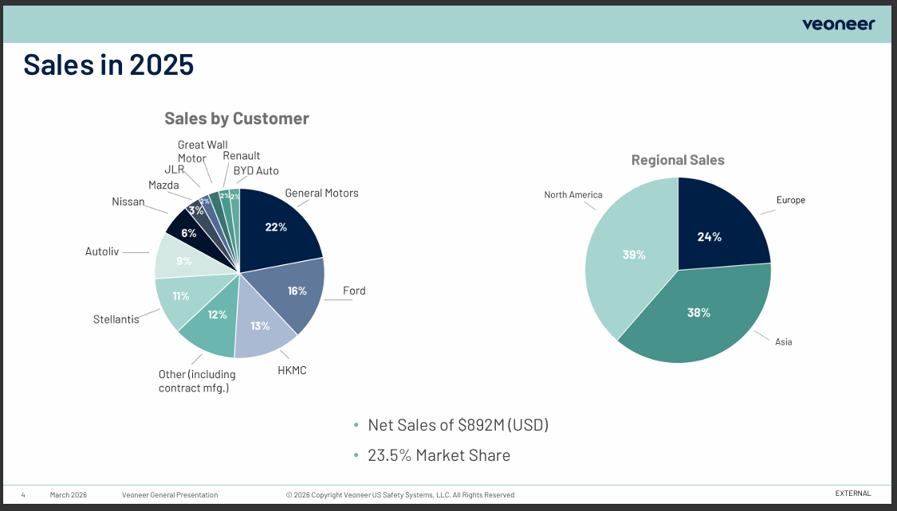
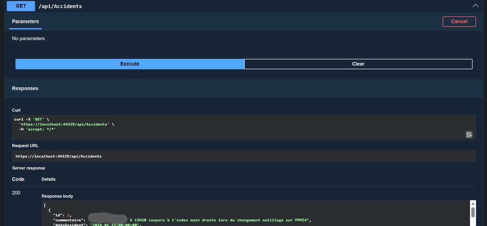
Utilisation de Swagger pour tester et valider le bon fonctionnement de l'API. Swagger permet de visualiser les routes et d'exécuter des requêtes depuis le navigateur.
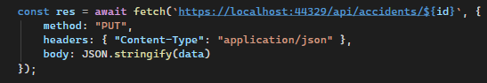
Les UseCases séparent le traitement des données de l'accès technique à la base de données. Un UseCase récupère les accidents, un autre en ajoute.
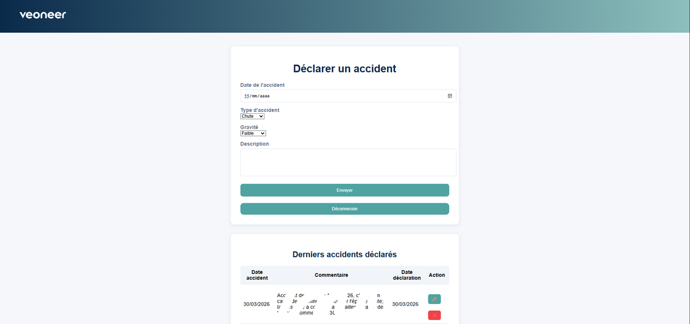
La méthode GET récupère la liste des accidents enregistrés dans la base de données pour affichage dans les différentes pages.
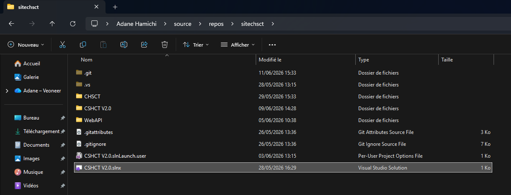
La méthode POST envoie les données du formulaire (date, type, gravité, description) à l'API qui les enregistre dans la base de données.
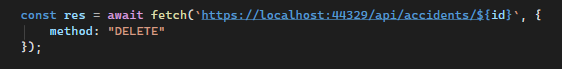
Swagger m'a permis de vérifier les échanges frontend ↔ backend, de tester les requêtes GET et POST, et de corriger rapidement les problèmes.
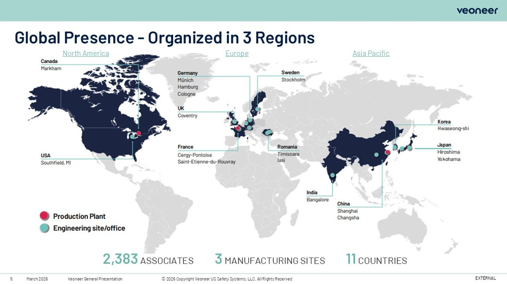
Perte des fichiers sources du projet précédent. Recréer la solution, les modèles et les contrôleurs sans documentation — comme reconstituer un puzzle.
Erreurs de mapping EF, sérialisation JSON (références circulaires résolues via JsonIgnore et DTOs), gestion des dates.
Le choix des couleurs est très important en entreprise. J'ai dû reprendre plusieurs fois la page d'accueil pour la cohérence de la direction artistique.
Premier contact avec ASP.NET Core, C# et Entity Framework Core. Montée en compétences via la documentation Microsoft et l'aide des tuteurs.
Durant ce projet, j'ai rencontré plusieurs difficultés, notamment la reconstruction partielle de l'application en l'absence de certains fichiers sources. J'ai également rencontré des problèmes liés à la communication entre le frontend et le backend, ainsi qu'à la gestion des dates. Ces difficultés m'ont permis de progresser.
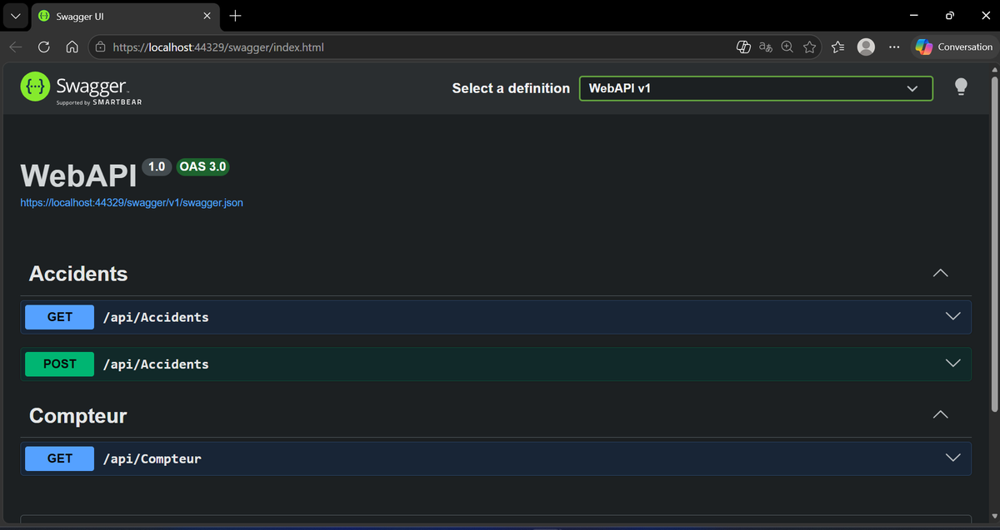
Rapport de stage Veoneer — Première page
RapportPrésence de Veoneer en Europe, Amérique du Nord et Asie
C1Besoins, raisons, objectifs et existant du projet CHSCT
C4Schéma de l'architecture 4 couches (Frontend → API → ORM → BDD)
C4Modélisation Code-First et migration EF Core
C5Formulaire structuré avec type, gravité et description
C3Authentification avec user et password, même DA que les autres pages
C5Recherche par mot-clé/date, modification et suppression
C3Visualisation et test des routes de l'API
C2Séparation traitement des données / accès BDD
C4Liste avec compteur temps réel
C3ID auto-incrémenté, colonnes structurées
C5